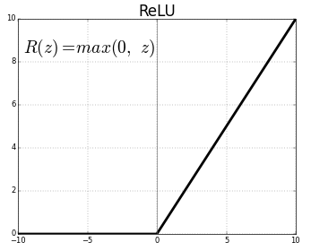

神经网络简介[zz]
文章目录

在神经网络最初实现的一个世纪前，Ada Lovelace 就有建立一个“神经系统的微积分”的野心，尽管将大脑同机器类比和计算哲学一样历史悠久，但直到Ada的老师 Charles Babbage 提出分析机（Analytical engine）之后，我们才开始考虑计算器有类似人类的认知能力。Ada 并没在有生之年看到从建造引擎到产生成果的过程，因为那时的工程师也无法把她要求的复杂电路实现出来。然而，这个想法传到了下一个世纪，图灵以之为灵感创造了模仿游戏（Imitation Game），这就是后来大名鼎鼎的图灵测试（Turing Test）。他关于计算之极限的思考被视为人工智能最初的一现昙华，为神经网络的黄金时代奠定了基础。
神经网络的诞生和再生
近来神经网络的复兴是一个很特别的故事。它和早期的人工智能密切相关，在 20 世纪 40 年代末期，借鉴了神经科学家和认知心理学家对人类学习过程中神经可塑性的早期研究，神经网络在图灵的 B 类机器(B-type machines)中首次正式公布。随着大脑发育机制的发现，计算机科学家实验了理想状态下的动作电位（action potential）和神经反向传播（neural backpropagation），试图在机器中模拟这个过程。
今天，大多数科学家警示我们不要过度使用类比，因为神经网络仅被设计来解决机器学习问题，并非精确描绘人脑，而另一个完全独立的称为计算神经学的领域接受了忠实建模大脑的调整。尽管如此，把神经网络核心单元比作简化的生物神经元的隐喻已深植人们的脑海。生物神经元到人工神经元的发展可以总结为下述图像。 ASU school of life sciences Anatomy of a biological neuron Artificial neuron
Frank Rosenblatt 在 20 世纪 50 年代后期发明了感知器（Perceptron），也就是我们在上一章看到的线性分类器，这对于神经网络是很大的进步。被美国海军公开资助的 Mark 1 感知器是用一串光电管、电位器、电机来实现图像识别功能。它能高效地执行复杂的电路操作，以至于纽约时报在 1958 年预测这个机器不久就能“走路，说话，观察，书写，自我复制和意识到自身的存在”。
之前的大肆宣传使得科幻作家们相信这在未来几十年就会成真，但学术圈远比他们淡定。Marvin Minsky 和 Seymour Papert 1969 年的专著 感知器（Perceptrons）中，描绘了许多——即便是非常琐碎的——限制，不经意间导致公众和学术圈对人工智能的兴趣减弱，他错误地假设电脑的计算能力会继续以 极快而危险的速度增长。即便是图灵自己也预言在 2000 年机器会具备类人的智力水平——恰好在千年虫问题引起恐慌的这一年。
尽管在 80 和 90 年代神经网络有一系列不显眼但重大的进步[1][2][3]，它们在 2000 年初时都处在二线，而大多数商业和工业中的机器学习应用都偏好支持矢量机（support vector machines）和许多其他手段。从 2009 年，尤其是 2012 年开始，神经网络重新成为机器学习算法的主旋律。神经网络的复兴很大程度上是由于卷积神经网络和 递归神经网络的出现所带来的，它们在解决视觉和听觉的关键问题时，显著地（甚至是戏剧性地）超过了之前最厉害的方法。但更有趣的是，它们有许多之前没有见过的新应用和属性，尤其是一些应用完全激起了艺术家们和各种圈子的人的兴趣。这本书会在现在开始的几个章节详细讲述卷积神经网络。
尽管这些年提出了许多机器学习算法，我们还是主要学习神经网络，是因为：
它们的结构异常简单而符合直觉。
在和本书最为相关的若干机器学习任务中，深度神经网络是目前最先进的技术。
近来大多数机器学习的创意应用都是用神经网络来制作的。
从线性分类器到神经元
回想一下之前的章节，2d 线性分类器或回归器的输入长这样：
$$ \begin{eqnarray} f(x_1, x_2) = b + w_1 x_1 + w_2 x_2 \end{eqnarray} $$
推广一下，到任意维度中，可以表示为：
$$ \begin{eqnarray} f(X) = b + \sum_i w_i x_i \end{eqnarray} $$
在回归的情形中，给定输入向量 $$X$$，预测输出为 $$f(X)$$。在分类的情形中，我们预测的分类为：
$$
\begin{eqnarray}
\mbox{classification} & = & \left{ \begin{array}{ll}
1 & \mbox{if } f(X) \gt 0
0 & \mbox{if } f(X) \leq 0
\end{array} \right.
\tag{1}\end{eqnarray}
$$
每个权重 $$w_i$$ 代表和它相乘的输入值 $$x_i$$ 的相对影响。公式中的 $$b$$ 通常叫做偏置（ bias），因为它控制神经元多大程度倾向于发射 1 或者 0，不论它的权重是多少。高的偏置意味着神经元需要更大的输入来输出 1，而低的则不需要那么大。
我们只要再加入两处创新，就可以从这个公式中推导出完备的神经网络。第一个是加上一个激活函数（activation function），它会把我们的线性鉴别器变成所谓的“神经元”，或者“单元”（与人脑模拟区分开）。第二个创新点是在“层”（layers）中依序连接的神经元架构。我们会一个一个介绍这些创新。
激活函数
在人工和生物神经网络中，神经元都不不仅仅输出它接收到的输入值。相反，中间还有一步，叫做激活函数（activation function），类似于动作电位向大脑发射信号的比率，激活函数接受之前的加权和作为输入，$$z = b + \sum_i w_i x_i$$，接着在最终输出前将它再转换一次。
人们提出了许多种激活函数，但是我们现在只详细描述两种：sigmoid 和 ReLU。
历史上，sigmoid 函数是最老且最为流行的激活函数。它的定义是：
$$ \sigma(x) = \frac{1}{1 + e^{-x}} $$
$$e$$代表指数常数，约等于2.71828。使用 sigmoid 作为激活函数的神经元叫做 sigmoid 神经元。我们首先令变量 $$z$$ 等于初始输入值的加权和，然后把它放入 sigmoid 函数中进行运算。
$$
z = b + \sum_i w_i x_i
\sigma(z) = \frac{1}{1 + e^{-z}}
$$
一开始，这个方程可能看起来很复杂且任意，但是它其实有一个非常简单的形状，如果我们将$$\sigma(z)$$的值作为输入为$$z$$的函数绘制出来就能看到这一点。
 Sigmoid activation function
Sigmoid activation function
我们可以看到 $$\sigma(z)$$ 的效果类似于一种“压缩函数”，把之前无界的输出值的范围压缩为 0 到 1。在中心处，当$$z = 0$$时， $$\sigma(0) = 1/(1+e^{0}) = 1⁄2$$。当 $$z$$ 为很大的负数时，分母中的 $$e^{-z}$$ 呈几何级数增长，此时 $$\sigma(z)$$ 趋近于 0。相反地，当 $$z$$ 为很大的正数时，$$e^{-z}$$ 趋近于 0，此时 $$\sigma(z)$$ 趋近于 1。
sigmoid 函数是连续可微的，而它的导数，很简单地，是 $$\sigma^\prime(z) = \sigma(z) (1-\sigma(z))$$。这很重要，因为我们需要用微积分来训练神经网络，但现在还不用担心这些。
过去几十年中，sigmoid 神经元是大多数神经网络的基础，但是近几年它已然失宠。原因我们稍后详解，简单来说就是，人们创造了有很多层的神经网络，因为梯度衰减问题，我们很难用 sigmoid 方法来训练神经网络。大多数神经网络转而使用另一种激活函数，修正线性单元（rectified linear unit），简称为 ReLU。尽管名字有点拗口，它的定义很简单： $$R(z) = max(0, z)$$。  ReLU activation function
换句话说，ReLUs 令所有的正值原样通过，但是会把所有的负值变为 0。尽管新的激活函数正在发展，大多数深度神经网络还是在用 ReLU 或者它的一个很接近的变体。
不论用的是哪种激活函数，我们都可以用这个标准示意图来可视化一个神经元，它直观地展示了一个神经元的行为。 An artificial neuron
上述示意图展示了一个有三个输入值，一个输出值 $$y$$ 的神经元。一如既往，我们先计算输入值的加权总和，然后令这个值通过激活函数 $$\sigma$$。
$$
z = b + w_1 x_1 + w_2 x_2 + w_3 x_3
y = \sigma(z)
$$
你可能很好奇激活函数的目的是什么，为什么我们在上一章玩线性分类器的时候，它只是简单输出了加权总和。原因就是加权总和$$z$$与输入值为[线性关系(https://en.wikipedia.org/wiki/Linearity)。也就是说，加权和与每一个输入值的相关性是平直的。相反，非线性激活函数极大地扩展了我们模拟曲线或其他非琐碎函数的能力。在接下来的部分中，这一点会被解释得更清楚。
Layers 神经层
我们已经讲过了神经元，现在可以给出神经网络的定义了。一个神经网络是由一系列层层（layers）排列的神经元组成的，每一层的神经元都与相邻层级的神经元相关联。 A 2-layer neural network
注意当我们在计算一个神经网络中有多少神经层的时候，我们只计算那些有连接流入它们的神经层（略掉第一层，或者说是输入层（input layer））。因此，上图中应该有两层神经网络并且其中之一是隐藏层（hidden layer）。它包含三个输入神经元，两个神经元在隐藏层，还有一个输出神经元。
我们从左侧的输入层开始计算，数值从这里传给隐藏层，隐藏层再将其输出的数值传给最后一层，最后一层存有最终值。
注意，这三个输入神经元与隐藏层的两个神经元之间都有连接，因此看起来好像是它们传输了多个数值。但实际上，每个神经元都只输出了一个数值，这个数值只是被复制到每个传出连接中。不论有多少输出对象，神经元们总是只输出一个数值。
正向传播
一个神经网络将最初的输入值经过其神经层并最终得到输出值的过程叫做正向传播（forward propagation 或 forward pass），任何以这种方式工作的神经网络都可以被称为前馈神经网络（feed forward neural network）。我们很快将看到，有一些网络允许数据循环流动，但让我们先别推进得这么快……
我们用这个可交互 demo 来展示一下正向传播。按下左上角的 “Next” 键来继续。你将会看到一个正向传播案例。
更多神经层，更强的表现力
为什么隐藏层非常有用？原因是如果我们没有隐藏层，直接从输入到输出，每个输入之于输出的作用就会完全独立于其他的输入。在现实世界的问题中，输入变量总是倾向于高度相互依存的，同时他们对于输出的影响也是组合的、复杂的。隐藏层神经元让我们能够获取输入值之间那些微妙的互动，这些互动会一层层向下影响最终的输出值。
用另一种方式来解释就是，隐藏层代表了这些数据更高级别的“特征”或者说属性。每一个隐层神经元都给输入值加了不同的权重，学习数据的不同中间特征，然后我们的输出神经元将会处理这些数据，而不是原始的未处理的输入数据。当有多个隐藏层时，神经网络就有机会在达到最终输出之前，学习到原始输入数据的多层抽象。[下一章][/ml4a/cn/looking_inside_neural_nets/]我们会对隐藏层作更深入的了解，到时候高级别特征这个概念会更加清晰。
回想一下，激活函数也对我们发掘输入值和输出值之间的非线性关系非常有帮助。将多重非线性转换关系通过神经层串联在一起，神经网络的灵活性和表现力得到了极大程度地提升。其证明过程非常复杂，并且超出了本书的讲述范围，但这甚至能够说明任何具有非线性激活函数（包括sigmoid 或 ReLU)）和足够多的隐藏单元的神经网络都是一个万能函数逼近器（universal function approximator），理论上能够表达任意由输入到输出的映射。而正是这一特质使得神经网络如此强大。
分类
分类是什么？在之前的章节中，我们介绍了二元分类，通过简单地设一个阀值，令未通过的输出为 0；如果我们的输出值是正的，我们就分类为正，如果输出是负的，我们就分类为负。对神经网络来说，最终的神经元采用这一方法是可行的，如果输出神经元得分大于某个阀值，就分类为正。比如说，我们可以给 sigmoid 神经元设阀值 0.5，它的输出始终是正数。
但如果我们有很多类呢？一个选择可能是给输出神经元设几个区间，每个对应不同的分类，但是这个方式可能会很麻烦，当我们学习神经网络是如何训练的时候就知道了。相比之下，神经网络特别适合于这样分类：给每个类设一个输出神经元。我们进行一个正向传播，我们的预测结果就是接受最高值的那个神经元所代表的分类。让我们来看一个例子。
手写体数字的分类
现在让我们来解决一些真实世界中，使用神经网络进行分类的例子：识别和标记手写数字的图像。我们将会用到 MNIST 数据集，这个数据集有 60,000 标记过的手写数字图像，每个大小 28x28 像素。能多大程度对这个数据集精确分类是机器学习研究通用的一个基准评效测试。下面是一些数据集中随机的样本图片。 A random sample of MNIST handwritten digits
我们要搭一个神经网络来对这些图像进行分类，方法是，在第一层输入层给出初始的图像像素数据，然后设定 10 个输出类别，分别是从 0 到 9。因为这些都是灰度图像，每个像素都有从 0（黑） 到 255（白） 的亮度值。所有的 MNIST 都是 28x28，所以它们每个有 784 个像素。我们可以把 784 个像素的数据展开成单个输入数组，如下图所示。 How to input an image into a neural network
最重要的事是，要注意尽管这似乎比之前章节简单的 3x2x1 网络酷炫很多，它和之前的原理是一模一样的，仅仅是多了许多神经元而已。第一个隐藏层中的每个神经元从第一层接受所有输入。而我们的输出层现在有10个神经元，而不是1个，和之前一样，和隐藏层完全连接。我们给每个输出神经元分配一个类别标签；第一个是数字0，第二个是1，以此类推。
文章作者 Jeff Liu
上次更新 2019-01-12